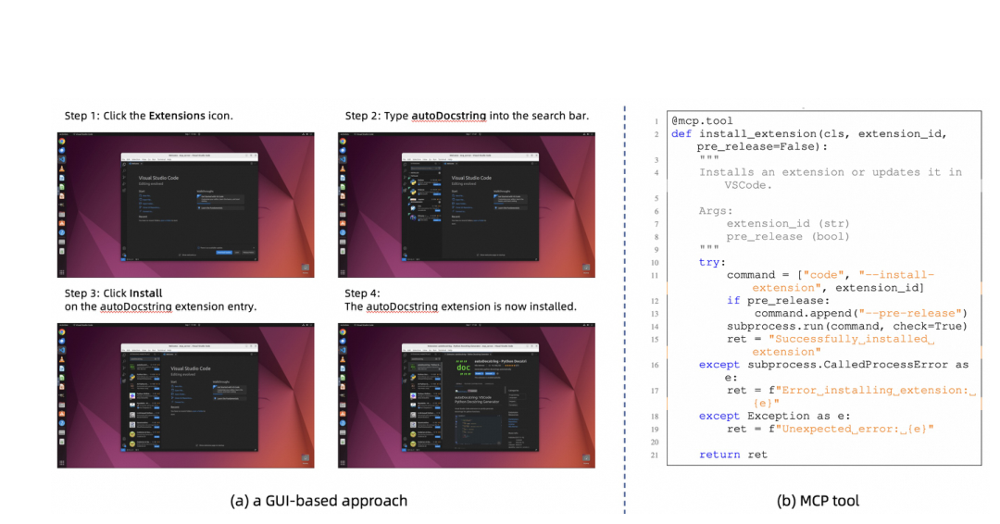

二、国内外研究现状
□ 混合模态方法：混合智能体（Hybrid Agent）与可验证训练环境（Verifiable Environment）
视觉
文本

CoAct-1：GUI 操作员 + 程序员 [Song+, ICLR 26]

OSWorld-MCP：GUI 之外提供工具 [Jia+, 2025]

GUI-Genesis：重建应用为可验证环境 [Cao+, 2026]
同一模型 · 同一任务集（OSWorld）
79.1
77.3
14.3
29.0
成功率 %
平均步数
■ 仅文本 ■ 仅视觉
文本通道以约一半步数取得相当成功率
文本通道以约一半步数取得相当成功率
混合方向已经出现，但缺少统一范式、可信评测与可验证的训练方法
优点：混合动作空间缩短轨迹；以参考应用为 oracle 构建可验证环境的思路开始出现
不足：第二模态多为辅助（增益约 3–5 个百分点），任务未强制协同且仅依据结果判分；可验证环境局限于单一界面